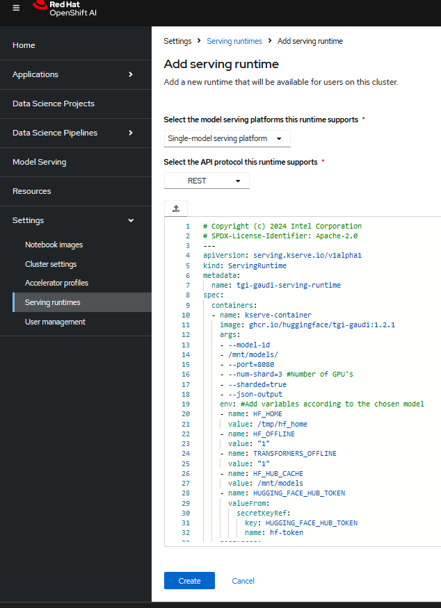
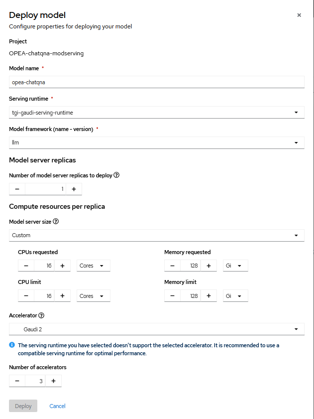
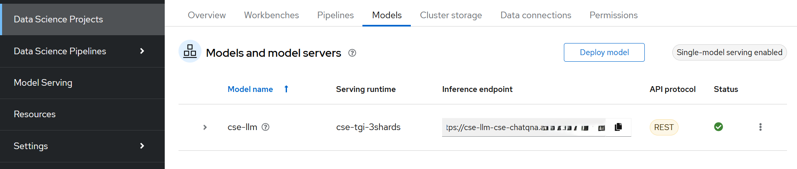

Deploy OPEA ChatQnA workload on OCP
Overview
The workload is based on the OPEA ChatQnA Application running on Intel® Gaudi Accelerator with OpenShift and OpenShift AI. Refer to the OPEA Generative AI Examples for more details about the OPEA workloads.
Note: It is still under heavy development, and the updates are expected.
Prerequisites
Provisioned RHOCP cluster. Follow steps here
The Persistent storage using NFS is ready. Refer to documentation for the details to set it up.
Note: Refer to documentation for setting up other types of persistent storages.
Provisioned Intel Gaudi accelerator on RHOCP cluster. Follow steps here
RHOAI is installed. Follow steps here
The Intel Gaudi AI accelerator is enabled with RHOAI. Follow steps here
Minio based S3 service ready for RHOAI. Follow steps here
Deploy Model Serving for OPEA ChatQnA Microservices with RHOAI
Create OpenShift AI Data Science Project
Click
Search -> Routes -> rhods-dashboardfrom the OCP web console and launch the RHOAI dashboard.Follow the dashboard and click
Data Science Projectsto create a project. For example,OPEA-chatqna-modserving.
Preload the models
Refer to link and download the model Llama2-70b-chat-hf.
Refer to link and upload the model to minio/s3 storage.
Click
OPEA-chatqna-modserving, and chooseData Connectionsection. In the fields, add your access and secret keys from minio. Follow link.
Launch the Model Serving with Intel Gaudi AI Accelerator
Click on the Settings and choose
ServingRuntime. Copy or import the tgi_gaudi_servingruntime.yaml. The tgi-gaudi serving runtime is used. Follow the image below.

In the project
OPEA-chatqna-modserving–>Modelssection and follow the image below.

The model server is now in the creation state. Once ready, the status will be updated to green and the inference endpoint can be seen. Refer to the image below.

Deploy ChatQnA Megaservice and Database
Create namespace
oc create namespace opea-chatqna
Create persistent volumes
The NFS is used to create the Persistent Volumes for ChatQnA MegaService to claim and use.
Make sure to update NFS server IP and path in persistent_volumes.yaml before applying command below.
For example:
nfs:
server: 10.20.1.2 # nfs server
path: /my_nfs # nfs path
$ oc apply -f https://raw.githubusercontent.com/intel/intel-technology-enabling-for-openshift/v1.6.1/workloads/opea/chatqna/persistent_volumes.yaml
Check that the persistent volumes are created:
$ oc get pv
NAME CAPACITY ACCESS MODES RECLAIM POLICY STATUS
chatqna-megaservice-pv-0 100Mi RWO Retain Available
chatqna-megaservice-pv-1 100Mi RWO Retain Available
chatqna-megaservice-pv-2 100Mi RWO Retain Available
Building OPEA ChatQnA MegaService Container Image
create_megaservice_container.sh
Deploy Redis Vector Database Service
$ oc apply -f https://raw.githubusercontent.com/intel/intel-technology-enabling-for-openshift/v1.6.1/workloads/opea/chatqna/redis_deployment_service.yaml
Check that the pod and service are running:
$ oc get pods
NAME READY STATUS RESTARTS AGE
redis-vector-db-6b5747bf7-sl8fr 1/1 Running 0 21s
$ oc get svc
NAME TYPE CLUSTER-IP EXTERNAL-IP PORT(S) AGE
redis-vector-db ClusterIP 1.2.3.4 <none> 6379/TCP,8001/TCP 43s
Deploy ChatQnA MegaService
Update the inference endpoint from the
$ oc apply -f https://raw.githubusercontent.com/intel/intel-technology-enabling-for-openshift/v1.6.1/workloads/opea/chatqna/chatqna_megaservice_deployment.yaml
Check that the pod and service are running:
$ oc get pods
NAME READY STATUS RESTARTS AGE
chatqna-megaservice-54487649b5-sgsh2 1/1 Running 0 95s
$ oc get svc
NAME TYPE CLUSTER-IP EXTERNAL-IP PORT(S) AGE
chatqna-megaservice ClusterIP 1.2.3.4 <none> 8000/TCP 99s
Verify the Megaservice
Use the command below:
curl <megaservice_pod_ip>/v1/rag/chat_stream \
-X POST \
-d '{"query":"What is a constellation?"}' \
-H 'Content-Type: application/json'